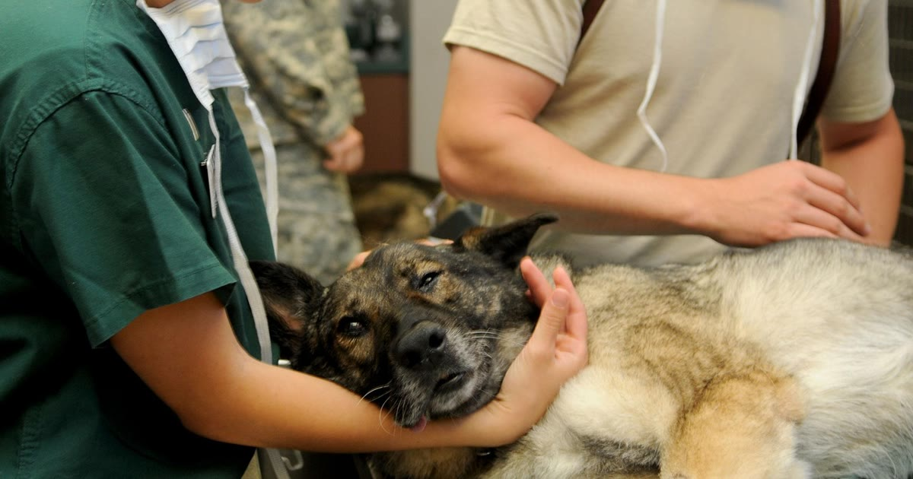

Coleira GPS e microchip resolvem problemas diferentes e não competem entre si. O microchip identifica o animal caso ele seja encontrado por terceiros; a coleira GPS localiza o animal em tempo real, antes mesmo de precisar de terceiros. A confusão entre os dois é comum, mas entender a diferença ajuda a decidir se vale usar um, outro, ou os dois.
O microchip é um dispositivo eletrônico do tamanho de um grão de arroz, implantado sob a pele do animal (geralmente na região do dorso) pelo médico-veterinário, sem necessidade de cirurgia. Ele contém um código exclusivo e inalterável, que funciona como um "RG": quando um leitor identifica esse número, ele é usado para acessar um banco de dados onde constam as informações de identificação do animal e do tutor (Hospital Veterinário São Francisco, retrieved 2026-08-22). Importante: o microchip não localiza o animal como um GPS — ele só serve para identificação após alguém encontrar o pet e levá-lo a um leitor.
Algumas cidades brasileiras, como Rio de Janeiro (RJ) e Jundiaí (SP), já tornaram o microchip obrigatório para cães e gatos, e o cadastro voluntário no SinPatinhas segue gratuito na maior parte do país (Click Petróleo e Gás, retrieved 2026-08-22).
A coleira GPS é ativa, com bateria, e transmite a localização do pet continuamente (ou por consulta) para um app no celular do tutor. Ela permite agir no momento da fuga, sem depender de alguém encontrar o animal.
entenda como a tecnologia da coleira GPS funciona
| Critério | Microchip | Coleira GPS |
|---|---|---|
| Função | Identificação após ser encontrado | Localização em tempo real |
| Precisa de bateria | Não | Sim |
| Pode ser removido pelo pet | Não (implantado) | Sim (é um acessório externo) |
| Custo recorrente | Não | Depende do modelo (chip de operadora costuma ter mensalidade) |
| Permite agir antes de o pet ser encontrado por terceiros | Não | Sim |
São camadas de proteção complementares: a coleira GPS ajuda a evitar que o pet se perca de vez, permitindo agir rápido; o microchip funciona como último recurso, caso a coleira seja removida, fique sem bateria, ou o pet fique fora do alcance de qualquer sinal por tempo suficiente para ser encontrado por outra pessoa.
compare com a opção específica para gatos
Não é uma escolha entre coleira GPS ou microchip — é entender que resolvem etapas diferentes do mesmo problema. Se você só puder investir em um agora, avalie o que resolve a situação mais provável do seu pet: fuga frequente pede coleira GPS; preocupação com identificação caso ele se perca de vez pede microchip. O ideal, quando possível, é usar os dois.
volte ao guia completo de coleira GPS para pet
Escrito pela Equipe Smart Pet Gadgets, redação especializada em comparativos de produtos pet no mercado brasileiro. Veja nossa política editorial e como verificamos as fontes citadas neste artigo.
🐾 Confira o preço e a disponibilidade atual no Mercado Livre.
Ver no Mercado Livre →Link de afiliado: podemos receber uma comissão por compras feitas através deste link, sem custo adicional para você.
Nildo Alves — curadoria de produtos pet no Smart Pet Gadgets. Testa e pesquisa produtos para cães e gatos, cruzando especificações de fabricante com boas práticas veterinárias e dados de mercado.
Sobre o Smart Pet Gadgets · Contato · Política editorial e de afiliados